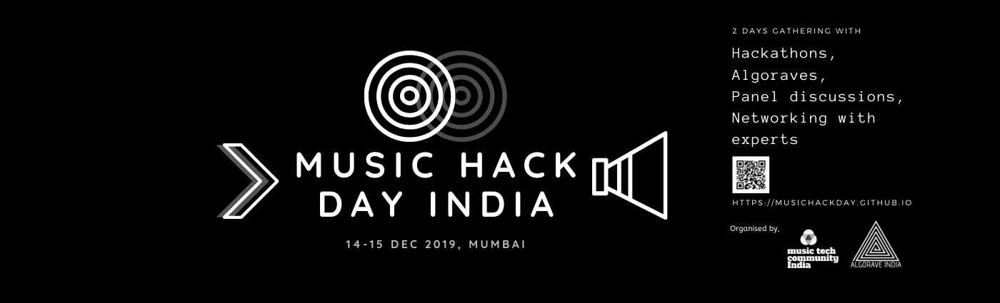
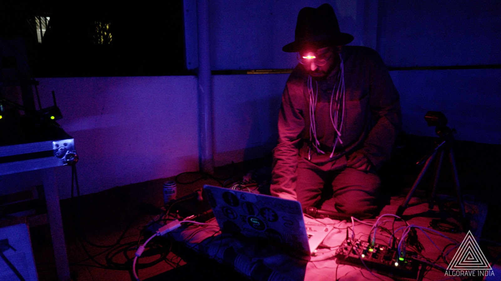
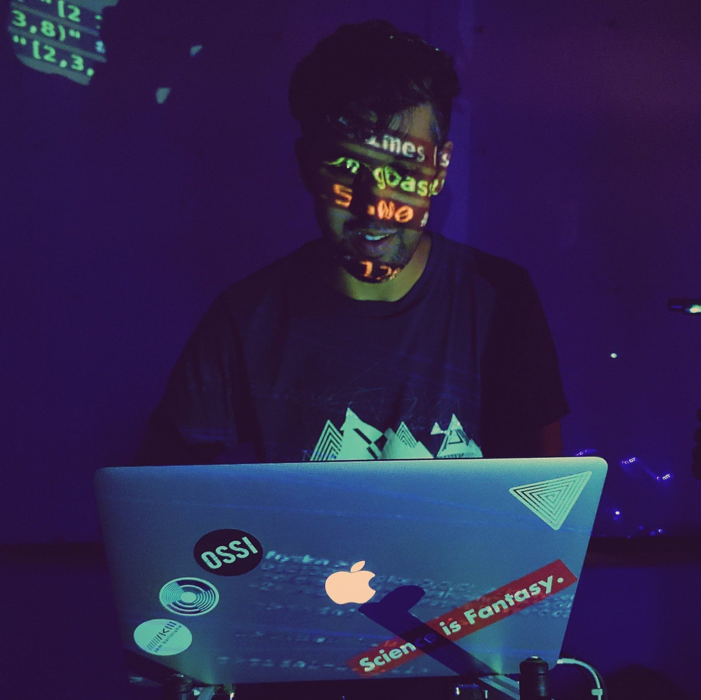
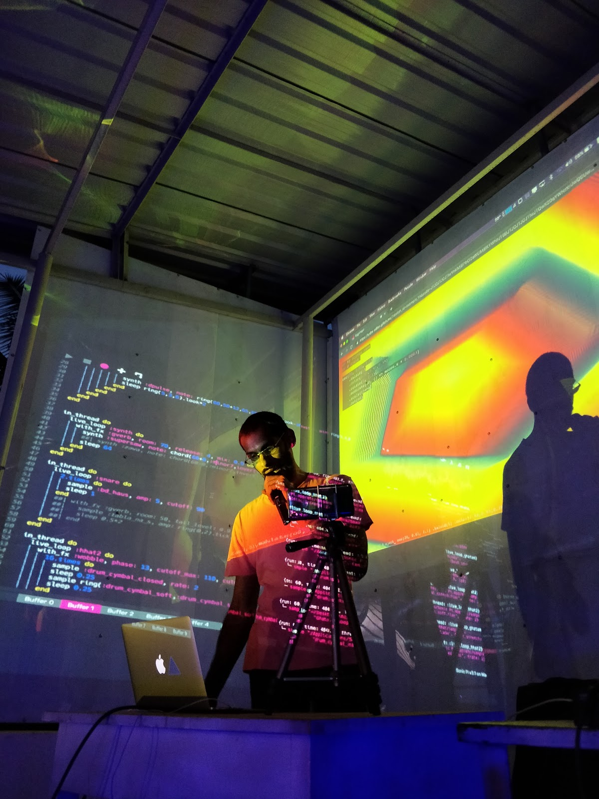
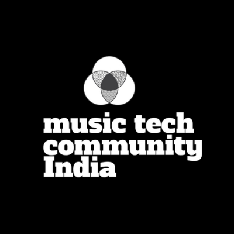

    <!--background color-->
    <script type="text/javascript">
        document.write ('<body style="background: Gainsboro; background-attachment: fixed;">')
    </script>

    <section id="conference" class="black-frame about about-container about-container-top">
      <h1>{{ page.title }}</h1>

      <!-- <div class="icon-about">
        
      </div> -->
      <p></p>
      <p></p>
      <p>Music Hack Day India is a community driven event where we would like programmers, artists, makers, academics and innovators to come together to ideate, develop and demo their vision of 
        music technology’s future. No restrictions in terms of the medium of hack - software(mobile, web, desktop), hardware(new instruments, modifications to existing ones). We are open to anything 
        that lies within the boundaries of music technology(even better if the boundaries are extrapolated). One of our bigger goals of organizing such an event is to bring everyone working or interested 
        in working in this field under one roof so that they can network and collaborate with each other by the means of working on these hacks and further push music tech scene in the Indian sub-continent.</p>
      <p>Music Hack Day India is an open, inclusive and interdiscplinary event. We follow <a href="https://berlincodeofconduct.org/">Berlin Code of Conduct </a> for the event.</p>
    
      <h2 class="first">Hackathon</h2>

      <p>More details will be updated here soon ....</p>

      <p>All the IP/ownership of ideas and works done by the hackathon participants soley lies with themselves.</p>
      
      <p>Check out our <a href="/faqs">FAQ</a> section for frequently asked questions.</p>

      <p>We recommend you to also check out the videos of past music hack days (attached below in the youtube playlist) which were organised around the world.</p>
      <p><iframe width="380" height="235" src="https://www.youtube.com/embed/videoseries?list=PLDWUdiZeVmVUSKx50fHBUB6KVYnUEJghD" frameborder="0" allow="autoplay; encrypted-media" allowfullscreen></iframe></p>
      
      <h2 class="second">Talks</h2>

      <p>More details will be updated here soon ....</p>

      <h2 class="first">Algorave Concerts</h2>

      <p>An algorave (from an algorithm and rave) is an event where people dance to music generated from algorithms, often using live coding techniques. (<a href="https://en.wikipedia.org/wiki/Algorave" target="_blank">wikipedia</a>)</p>
      <p>We are very glad to have our friends from the growing Algorave India community to perform. The following artists will perform a live set on 14th Saturday, December evening</p>

      <p><a href="" target="_blank">substance D</a></p>
      <p></p>
      <p>substance_D is an experimental artist exploring electro- acoustic improvisation, data manipulation, algorithmic compositions, and sensor-based music. He likes to indulge in wood, electronics, metal, mud and anything that has structural binding and makes strange objects.
      His footprint is largely anonymous and emerges out periodically. He catalogs tribal dance, folk tales, acoustic information and conducts informal learning sessions in the himalayan villages with the school kids on understanding sound and computer codes. Active soul in the fab lab’s spread across via the common thread of internet and trying to push creative coding using various approaches like workshops, performances, talks and informal meet-ups. Been an integral part of the Algorave sub culture in India.</p> 

      <p><a href="" target="_blank">Khoparzi</a></p>
      <p></p>
      <p>Abhinay Khoparzi is a multidisciplinary creative technologist who maintains a practice across film, video, music and web technologies. He has had a long relationship with the experimental electronic music scene in Mumbai with performances at venues and events like The Indian Electronica Festival, (Blue Frog), 6 Foot Oscillator in a 4 foot Room (Zenzi Mills). Abhinay co-founded the pioneering but now defunct web platform, 
      netlabel, and publishing company 3rd Thought Entertainment in the early 2000’s where he organised collaborative performances with experimental, IDM artists like Kargo Pluggy, Sadahnmo and others from the varied roster. In the past year Khoparzi has performed live coded music and visuals with TidalCycles and Hydra at Fat Finger Mayhem (Max Mueller Bhavan, Mumbai, 2018 and 2019), Algorave Sheffield (UK, 2018), International Conference of Live Coding (Madrid, 2019), Algorave Bangalore, and Pune (2019). He now organises/conducts live coding workshops in collaboration with various maker spaces and artists collectives across India and has been curating and organising the Algorave events all over the country.</p>

      <p><a href="" target="_blank">Tig3rbabu</a></p>
      <p></p>
      <p>Tig3rbabu is a music project by musician and podcast producer Joshua Thomas, which focuses on using code to create synth pop songs and electronic arrangements - for the joy of pop music! He currently works as the Executive Producer for Express Audio (The Indian Express Podcast division) and uses the free live coding synthesizer Sonic Pi to create music and sound design across all the podcasts on the network.</p>
    </section>

    <section id="fourth" class="black-frame about about-container about-container-bottom">
      <h1>About Organisers</h1>

      <p>Music Hack Day is organised by the <a href="http://musictechcommunity.org/" target="_blank">Music Tech Community India</a> in collaboration with the <a href="https://www.facebook.com/algoraveindia/" target="_blank">Algorave India</a> community and also with our dear colloborators.
        Find more about the team <a href="/team">here.</a>
      </p>
      <p></p>
      <p>MTC-India is an open community initiative run by a group of volunteers with a mission to maintain a forum to bring together musicians, technologists, artists, developers, audiophiles and makers in India that are related to music technology.
      The main objective of MTC-India is to foster the communication and interaction between people on different edges of music-tech spectrum, with a hope to build an open, transparent, and actively collaborative community.  
      </p>
      <p></p>
      <p>Algorave India is a community of creative technologists striving to create an environment of making code friendly in India : creating music and visuals with open source creative coding tools.</p>
    </section>
